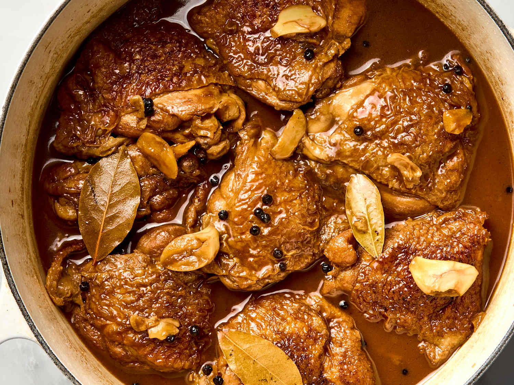
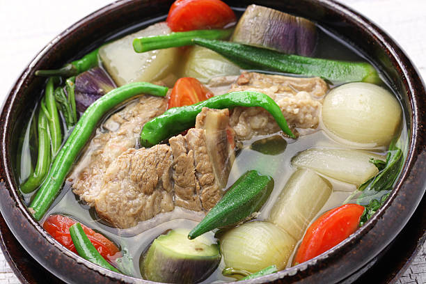
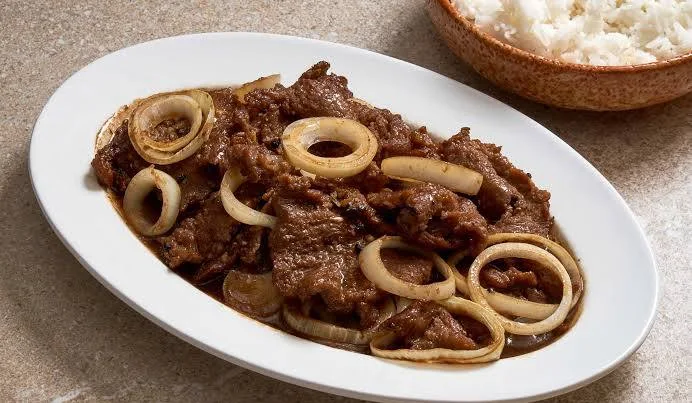
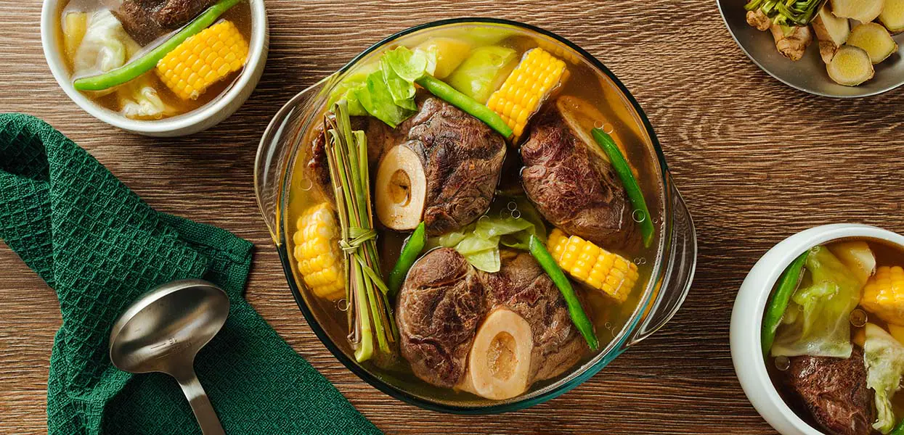
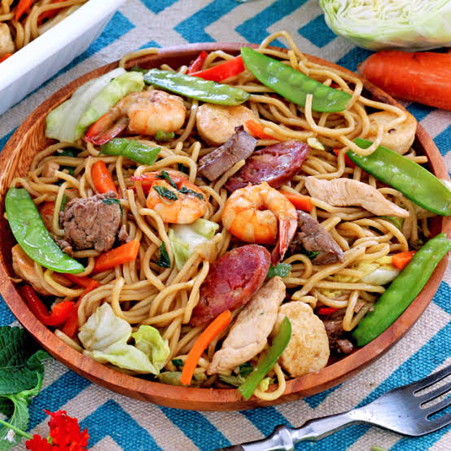
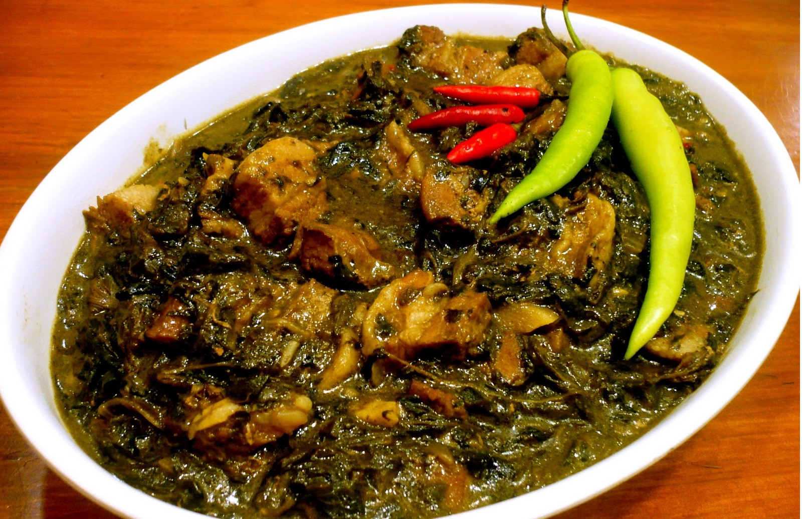
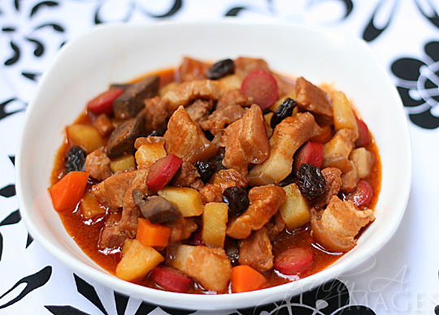
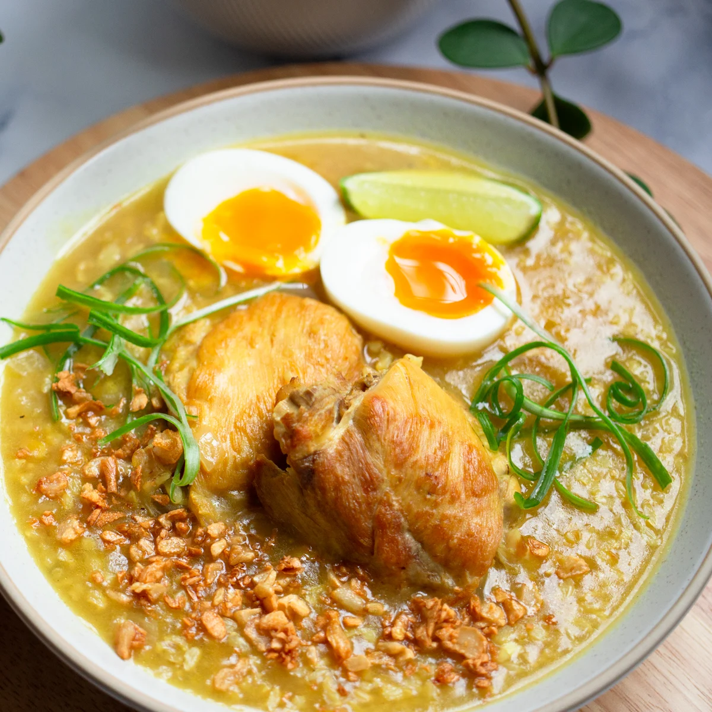

Chicken Adobo
A classic Filipino dish with soy sauce, vinegar, and garlic.
Tip: Marinate the chicken for at least 30 mins for better flavor.
How to Cook:
- Marinate chicken with soy sauce, garlic, and pepper for 30 minutes.
- Heat oil in a pan and sauté garlic until fragrant.
- Add chicken and sear until lightly browned.
- Pour in vinegar and let it boil without stirring for 3 minutes.
- Add water and bay leaves, then simmer for 30 minutes or until chicken is tender.
- Adjust taste and serve hot with rice.

Sinigang na Baboy
Sour soup with pork and vegetables, easy for beginners.
Tip: Add tamarind paste gradually to control sourness.
How to Cook:
- Boil pork in water with tomato and onion until tender.
- Add radish, sitaw (string beans), and eggplant, cook for 5-7 minutes.
- Add tamarind paste or sinigang mix to taste.
- Serve hot with rice.

Kare-Kare
A rich Filipino stew made with peanut sauce, vegetables, and tender beef.
Tip: Serve with bagoong (shrimp paste) for authentic Filipino flavor.
How to Cook:
- Boil beef until tender.
- Add eggplant, string beans, and banana blossom.
- Mix peanut butter and annatto powder into the broth.
- Simmer until thick and flavorful.
- Serve hot with bagoong and rice.

Bistek Tagalog
A savory Filipino beef steak marinated in soy sauce and calamansi juice.
Tip: Marinate the beef for at least 1 hour for a richer flavor.
How to Cook:
- Marinate beef in soy sauce and calamansi.
- Pan-fry beef until browned.
- Sauté onions until soft.
- Combine beef and onions with marinade.
- Simmer for 10 minutes and serve.

Bulalo
A comforting beef marrow soup with vegetables and corn.
Tip: Simmer the beef slowly to achieve a flavorful broth.
How to Cook:
- Boil beef shank until tender.
- Add onions and corn.
- Season with fish sauce and pepper.
- Add cabbage and green beans.
- Serve hot.

Pancit Canton
A popular Filipino noodle dish served during celebrations.
Tip: Avoid overcooking the noodles to keep them firm.
How to Cook:
- Sauté garlic, onions, and meat.
- Add vegetables and broth.
- Add pancit noodles.
- Mix until noodles absorb the broth.
- Serve warm.
Lumpiang Shanghai
Crispy Filipino spring rolls filled with seasoned meat.
Tip: Roll tightly to prevent the filling from spilling while frying.
How to Cook:
- Mix ground pork, carrots, onions, and seasonings.
- Wrap in lumpia wrappers.
- Roll tightly and seal edges.
- Deep fry until golden brown.
- Serve with sweet chili sauce.

Leche Flan
A creamy Filipino dessert topped with sweet caramel.
Tip: Strain the mixture before steaming for a smoother texture.
How to Cook:
- Prepare caramelized sugar in a llanera.
- Mix egg yolks, milk, and sugar.
- Pour into the llanera.
- Steam for 30–40 minutes.
- Cool before serving.
Chicken Tinola
A healthy chicken soup with ginger, papaya, and chili leaves.
Tip: Use fresh ginger for a more flavorful broth.
How to Cook:
- Sauté garlic, onion, and ginger.
- Add chicken and cook until lightly browned.
- Pour water and simmer until chicken is tender.
- Add green papaya and cook for 10 minutes.
- Add chili leaves and serve hot.

Pork Sisig
A sizzling Filipino favorite made with chopped pork and onions.
Tip: Add mayonnaise for a creamier sisig.
How to Cook:
- Boil pork until tender.
- Grill or fry until crispy.
- Chop into small pieces.
- Mix with onions, chili, soy sauce, and calamansi.
- Serve on a sizzling plate.

Laing
Dried taro leaves cooked in rich coconut milk.
Tip: Do not stir immediately after adding the dried leaves.
How to Cook:
- Boil coconut milk with garlic, onion, and ginger.
- Add dried taro leaves.
- Simmer until tender.
- Add chili peppers.
- Serve with rice.
Ginataang Kalabasa
Squash and string beans cooked in creamy coconut milk.
Tip: Add shrimp for extra flavor.
How to Cook:
- Sauté garlic and onions.
- Add squash and coconut milk.
- Cook until squash softens.
- Add string beans.
- Season and serve.

Pork Menudo
A tomato-based pork stew with vegetables.
Tip: Let it simmer longer for tender pork.
How to Cook:
- Sauté garlic, onion, and tomatoes.
- Add pork and cook.
- Pour tomato sauce and water.
- Add potatoes and carrots.
- Serve warm.
Chicken Afritada
Chicken cooked in tomato sauce with vegetables.
Tip: Add bell peppers at the end to keep them crisp.
How to Cook:
- Brown the chicken.
- Sauté garlic, onions, and tomatoes.
- Add tomato sauce and water.
- Add potatoes and carrots.
- Serve hot.

Beef Caldereta
A hearty beef stew with tomato sauce and liver spread.
Tip: Simmer the beef until very tender.
How to Cook:
- Brown the beef.
- Add garlic, onions, and tomato sauce.
- Simmer until beef is tender.
- Add vegetables and liver spread.
- Serve hot.

Arroz Caldo
A comforting Filipino rice porridge with chicken.
Tip: Top with boiled egg and fried garlic.
How to Cook:
- Sauté garlic, onion, and ginger.
- Add chicken pieces.
- Add rice and broth.
- Cook until the rice becomes soft.
- Serve hot.
Turon
Sweet banana spring rolls coated with caramelized sugar.
Tip: Use ripe saba bananas for the best taste.
How to Cook:
- Wrap banana and jackfruit in lumpia wrapper.
- Seal the wrapper.
- Fry until golden brown.
- Sprinkle sugar while frying.
- Serve warm.
Halo-Halo
A famous Filipino dessert with shaved ice, milk, fruits, and sweets.
Tip: Add ube ice cream for extra flavor.
How to Prepare:
- Place sweetened beans and fruits in a tall glass.
- Add shaved ice.
- Pour evaporated milk.
- Top with leche flan and ube ice cream.
- Mix well before eating.